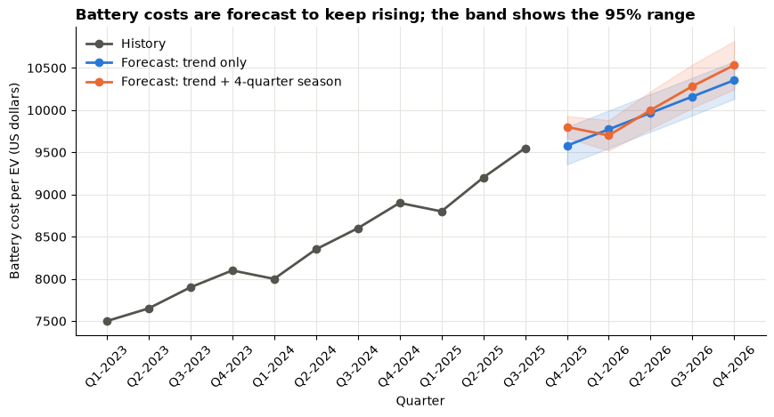
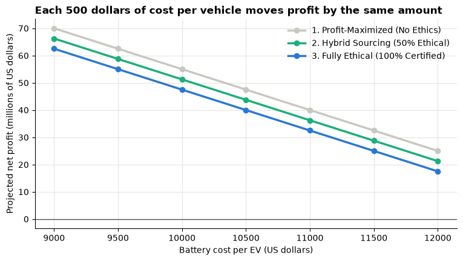

Day 6 lab: Applied Lab 7 — BI case study implementation¶
Continue the EcoDrive Motors case from Lab 6. Forecast the cost of electric-vehicle batteries with Excel's Forecast Sheet, carry the worst-case forecast into a case-study dashboard that compares three sourcing strategies, and write a managerial report that weighs profit against ethical and social impact. This notebook gives the Excel steps and cross-checks the forecast in Python.
Adapted from the DATA 300 syllabus, Applied Lab 7 (BI case study implementation). Instructions rewritten for this classroom; the data come bundled with the course.
| Graded | Yes: 2% of the course grade |
| Outcomes | CLO 4 and 5 |
| Tools | Microsoft Excel (Forecast Sheet; the graded work); this notebook in JupyterLab to check your forecast |
| You submit | Two files in the Applied Lab 7 drop-box on GAP (Moodle): your workbook YourLastName_DATA300_Lab7.xlsx and your report YourLastName_Lab7_Report.pdf |
| Deadline | Wednesday 18 November, 23:59 China Standard Time, unless your facilitator says otherwise (see the schedule) |
Three notes on the syllabus version
- Eleven quarters, not twelve. The history runs from Q1-2023 to Q3-2025: 11 values, in rows 2–12 (not 2–13).
- A numeric timeline. Excel's Forecast Sheet needs the timeline to be numbers or dates at equal steps; labels such as "Q1-2023" are text. The bundled workbook therefore numbers the quarters 1–11 in column A and keeps the labels in column C.
- Five steps ahead. From period 11 (Q3-2025), Q4-2026 is period 16, five quarters ahead, so the forecast must end at 16.
The business scenario¶
After your Lab 6 simulation, the EcoDrive Motors (fictional) board has a new worry. Shortages of lithium and cobalt have pushed the cost of EV batteries up and down over the last three years. Before committing to the 500-dollar ethical sourcing premium for next year's launch, the chief financial officer (CFO) wants to know where battery costs are heading, and what each sourcing strategy would earn if costs end up at the high end of the forecast.
Your three tasks:
- Predict: forecast the battery cost per vehicle to Q4-2026 with Excel's exponential smoothing (ETS) forecast.
- Compare: build a case-study dashboard of three sourcing strategies under the worst-case forecast cost.
- Recommend: write a managerial report that weighs the money against the ethical and social impacts.
Before you start¶
- In the course folder, open
data/ecodrive_battery_costs.xlsxin Excel and immediately File → Save AsYourLastName_DATA300_Lab7.xlsxin your own folder. Its sheet Historical Data already holds the 11 quarters. (You may instead type the data into a blank workbook: same layout, sheet named Historical Data.) - Keep this notebook open next to Excel and run its cells with Shift + Enter.
The first cell loads the same data in Python.
import matplotlib.pyplot as plt
import numpy as np
import pandas as pd
from statsmodels.tsa.exponential_smoothing.ets import ETSModel
BLUE, ORANGE, AQUA = "#2a78d6", "#eb6834", "#1baf7a"
GREY = "#c9c7c1"
INK = "#55534e"
plt.rcParams.update({
"figure.figsize": (9, 4.5),
"axes.spines.top": False,
"axes.spines.right": False,
"axes.grid": True,
"axes.axisbelow": True,
"grid.color": "#e6e5e1",
"axes.titleweight": "bold",
"axes.titlelocation": "left",
})
history = pd.read_excel("data/ecodrive_battery_costs.xlsx", sheet_name="Historical Data", usecols="A:C")
print(history.to_string(index=False))
Period Battery Cost per EV ($) Quarter
1 7500 Q1-2023
2 7650 Q2-2023
3 7900 Q3-2023
4 8100 Q4-2023
5 8000 Q1-2024
6 8350 Q2-2024
7 8600 Q3-2024
8 8900 Q4-2024
9 8800 Q1-2025
10 9200 Q2-2025
11 9550 Q3-2025
Part 1: Time series forecasting in Excel (CLO 4)¶
Excel's Forecast Sheet fits an exponential smoothing (ETS) model: it gives recent quarters more weight than old ones, follows the trend, and, if it finds one, a repeating seasonal pattern. It also draws a 95% confidence interval: a lower and an upper bound around each forecast.
In Excel: create the forecast (sheet Historical Data)
- Check the layout: A1 Period, B1 Battery Cost per EV ($), C1 Quarter; periods 1–11 in A2:A12, costs in B2:B12. Format B2:B12 as currency if it is not already.
- Select A1:B12 (the timeline and the values, with their headers).
- Data → Forecast Sheet (数据 → 预测工作表), in the Forecast group at the right of the Data tab.
- In the preview window choose the line chart, then set Forecast End to 16 (period 16 = Q4-2026).
- Click Options and check: Confidence Interval 95%; Seasonality Detect automatically; Timeline Range
A2:A12; Values RangeB2:B12.- Click Create. Excel adds a new sheet with a table and a chart: the history, the Forecast, the Lower Confidence Bound and the Upper Confidence Bound for periods 12–16.
- Rename the new sheet Predictive Forecast.
- Find the row for period 16 (usually row 17) and write down three numbers for your report: the forecast, the lower bound and the upper bound. Note which cell holds the upper bound (usually E17); Part 2 links to it.
If Forecast Sheet is greyed out or missing
It needs Excel 2016 or later. Click a cell inside the data first. If Excel complains about the timeline, check that column A holds numbers 1–11 with no gaps and no text.
Python cross-check¶
Excel chooses its ETS settings automatically, so its numbers depend on whether it detects a 4-quarter seasonal pattern. The cell below fits the two most likely versions with the same method (additive ETS) and prints their forecasts and 95% bounds. Your Excel results should be close to one of the two, but they will not match exactly: Excel's fitting procedure is not identical. In your report, quote Excel's numbers.
Predict, then reveal
Will the forecast for Q4-2026 be above or below 10,000 dollars? And the upper bound?
y = history["Battery Cost per EV ($)"].astype(float)
future_periods = np.arange(12, 17) # Q4-2025 ... Q4-2026
future_labels = ["Q4-2025", "Q1-2026", "Q2-2026", "Q3-2026", "Q4-2026"]
fits = {
"trend only": ETSModel(y, error="add", trend="add").fit(disp=False),
"trend + 4-quarter season": ETSModel(y, error="add", trend="add", seasonal="add",
seasonal_periods=4).fit(disp=False),
}
forecasts = {}
for name, fit in fits.items():
frame = fit.get_prediction(start=len(y), end=len(y) + 4).summary_frame(alpha=0.05)
frame.index = pd.Index(future_periods, name="period")
frame.insert(0, "quarter", future_labels)
forecasts[name] = frame.rename(columns={"mean": "forecast", "pi_lower": "lower bound",
"pi_upper": "upper bound"})
print(f"--- ETS, {name} (US dollars per vehicle) ---")
print(forecasts[name].to_string(formatters={c: "{:,.0f}".format
for c in ["forecast", "lower bound", "upper bound"]}))
print()
--- ETS, trend only (US dollars per vehicle) ---
quarter forecast lower bound upper bound
period
12 Q4-2025 9,578 9,356 9,801
13 Q1-2026 9,772 9,550 9,995
14 Q2-2026 9,966 9,744 10,189
15 Q3-2026 10,161 9,938 10,383
16 Q4-2026 10,355 10,132 10,577
--- ETS, trend + 4-quarter season (US dollars per vehicle) ---
quarter forecast lower bound upper bound
period
12 Q4-2025 9,800 9,672 9,927
13 Q1-2026 9,700 9,520 9,881
14 Q2-2026 10,000 9,779 10,221
15 Q3-2026 10,283 10,028 10,539
16 Q4-2026 10,533 10,247 10,818
fig, ax = plt.subplots(figsize=(10, 4.5))
ax.plot(history["Period"], y, marker="o", color=INK, linewidth=2, label="History")
for (name, frame), colour in zip(forecasts.items(), [BLUE, ORANGE]):
ax.plot(frame.index, frame["forecast"], marker="o", color=colour, linewidth=2, label=f"Forecast: {name}")
ax.fill_between(frame.index, frame["lower bound"], frame["upper bound"], color=colour, alpha=0.15)
ax.set_xticks(range(1, 17), list(history["Quarter"]) + future_labels, rotation=45)
ax.set_title("Battery costs are forecast to keep rising; the band shows the 95% range")
ax.set_xlabel("Quarter")
ax.set_ylabel("Battery cost per EV (US dollars)")
ax.legend(frameon=False, loc="upper left")
plt.show()

Read the chart above: the line continues the upward trend, and the shaded band is the range in which the model expects the true cost to fall 95% of the time. Your Excel chart should look similar. Use your Excel Predictive Forecast sheet for questions 1 and 2.
Part 2: The case-study dashboard¶
The CFO wants to plan for the worst case the forecast considers plausible: the upper confidence bound for Q4-2026. Three sourcing strategies are on the table:
| Strategy | Ethical premium per vehicle |
|---|---|
| 1. Profit-maximised (no ethical sourcing) | 0 |
| 2. Hybrid sourcing (half the batteries certified) | 250 |
| 3. Fully ethical (all batteries certified) | 500 |
In Excel: constants and the forecast link (sheet Case Study Dashboard)
- Add a sheet and rename it Case Study Dashboard.
- Type the constants:
Cell Label (column A) Value (column B) A1 / B1 Expected EV Demand 15000 A2 / B2 EV Sale Price 35000 A3 / B3 Non-Battery Manufacturing Cost 18000 A4 / B4 Fixed Overhead Costs 50000000
- In A6 type Projected Battery Cost (Upper Confidence Bound, Q4-2026).
- In B6 type
=, click the Predictive Forecast tab, click the cell with the upper bound for period 16, and press Enter. B6 now shows a formula such as='Predictive Forecast'!E17. Check that the value is the number you wrote down in Part 1.In Excel: compare the three strategies
- Row 8, headings: A8 Strategy, B8 1. Profit-Maximized (No Ethics), C8 2. Hybrid Sourcing (50% Ethical), D8 3. Fully Ethical (100% Certified).
- Row 9, premium: A9 Ethical Premium; B9
0, C9250, D9500.- Row 10, cost per vehicle: A10 Total Variable Cost; in B10 type
=$B$3+$B$6+B9and copy it to C10:D10. The$signs keep the non-battery cost and the battery cost fixed while the premium column changes.- Row 11, profit: A11 Projected Net Profit; in B11 type
=($B$1*$B$2)-($B$1*B10)-$B$4and copy it to C11:D11.- Format B9:D11 as currency.
- Recommended: select B8:D8, hold Ctrl and select B11:D11, then Insert → Column Chart (插入 → 柱形图). Give the chart a message title, for example the profit gap between strategies 1 and 3.
The cell below computes the dashboard with each Python upper bound, so you can check your formulas. Your row 11 will differ a little, because your B6 comes from Excel's forecast; the gaps between strategies must match exactly. Work out why.
DEMAND, PRICE, NON_BATTERY, OVERHEAD = 15_000, 35_000, 18_000, 50_000_000
PREMIUMS = {"1. Profit-Maximized (No Ethics)": 0,
"2. Hybrid Sourcing (50% Ethical)": 250,
"3. Fully Ethical (100% Certified)": 500}
def dashboard(battery_cost):
"""Rows 9-11 of the Case Study Dashboard for a given battery cost per vehicle (cell B6)."""
rows = {}
for strategy, premium in PREMIUMS.items():
variable = NON_BATTERY + battery_cost + premium
rows[strategy.split(" (")[0]] = {"premium (row 9)": premium, "variable cost (row 10)": variable,
"net profit (row 11)": DEMAND * PRICE - DEMAND * variable - OVERHEAD}
return pd.DataFrame(rows).T
for name, frame in forecasts.items():
upper = frame.loc[16, "upper bound"]
print(f"--- B6 = {upper:,.0f} (upper bound for Q4-2026, ETS {name}) ---")
print(dashboard(upper).map("{:,.0f}".format).to_string())
print()
--- B6 = 10,577 (upper bound for Q4-2026, ETS trend only) ---
premium (row 9) variable cost (row 10) net profit (row 11)
1. Profit-Maximized 0 28,577 46,343,926
2. Hybrid Sourcing 250 28,827 42,593,926
3. Fully Ethical 500 29,077 38,843,926
--- B6 = 10,818 (upper bound for Q4-2026, ETS trend + 4-quarter season) ---
premium (row 9) variable cost (row 10) net profit (row 11)
1. Profit-Maximized 0 28,818 42,722,534
2. Hybrid Sourcing 250 29,068 38,972,534
3. Fully Ethical 500 29,318 35,222,534
Part 3: Managerial report¶
Write a short, professional managerial report in Word for the CFO and the board. Use the two section headings below, put your name and student ID at the top, and answer every question in complete sentences, quoting your Excel numbers with units. You may paste your forecast chart and dashboard into the report as pictures (copy them from Excel).
Section 1: Predictive modelling analysis (CLO 4)¶
| # | Question |
|---|---|
| 1 | Trend. Describe the history of battery costs shown on your Predictive Forecast sheet: direction, rough size of the change, and any repeating pattern within the year. What is the forecast (baseline) battery cost for Q4-2026? |
| 2 | Confidence intervals. Explain, in your own words, what the lower and upper confidence bounds mean in a forecast. Why does the dashboard use the upper bound rather than the baseline forecast? |
Section 2: Ethical impact and BI evaluation (CLO 5)¶
| # | Question |
|---|---|
| 3 | The cost of ethics. If the worst-case battery cost for Q4-2026 comes true, what is the projected net profit of Strategy 1 (no ethics) and of Strategy 3 (fully ethical)? How large is the difference, in dollars and as a share of Strategy 1's profit? |
| 4 | Recommendation. EcoDrive markets itself as a "green and responsible" company, yet full ethical sourcing plus rising battery costs cuts its margins. As an analytics consultant, write one or two paragraphs recommending one of the three strategies. Justify it by weighing the numbers (profit, costs) against the societal impacts: brand reputation, human rights in the supply chain, and corporate social responsibility. |
| 5 | The value of BI. Why does combining a time series forecast with a dashboard of several strategies support a better decision than simply looking at last year's battery costs? |
Writing tips
Start Section 2 with your recommendation in one sentence. Quote the profit gap in dollars and in per cent. A strong recommendation names what the spreadsheet leaves out (fines, import bans on goods linked to forced labour, boycotts, staff and investor reactions) and says what you would monitor after the decision. "Hybrid" is not automatically the safe middle: if you choose it, explain what happens to the uncertified half.
Part 4: Save and submit¶
- Check the workbook has the sheets Historical Data, Predictive Forecast and Case Study Dashboard, and that B6 on the dashboard is a link to the forecast sheet (click it: the formula bar shows
='Predictive Forecast'!…). - Save it as
YourLastName_DATA300_Lab7.xlsx. - Save the report as PDF: File → Save As → PDF (文件 → 另存为 → PDF), named
YourLastName_Lab7_Report.pdf. - Log in to GAP (Moodle), open the DATA 300: Applied Lab 7 drop-box, upload both files and click Submit by 23:59 China Standard Time today.
Paste any charts into the Word report before you save it as PDF, so the report is a single file. If you end up with two PDFs, combine them as shown in Combining PDFs without internet.
Checklist before you upload¶
- Predictive Forecast sheet created by Forecast Sheet, ending at period 16, with lower and upper bounds.
- Case Study Dashboard: B6 links to the period-16 upper bound; rows 9–11 complete and formatted as currency.
- The gaps between strategies match the Part 2 check.
- Report: two sections, five numbered answers, Excel numbers quoted with units, one clear recommendation.
- Files named
YourLastName_DATA300_Lab7.xlsxandYourLastName_Lab7_Report.pdf, both uploaded to the Applied Lab 7 drop-box on GAP (Moodle).
How it is marked¶
The lab uses the course's Lab 7 rubric: CLO 4 (developing predictive models such as time series forecasts to project outcomes, 40 points), CLO 5 (evaluating BI tools in a case and writing managerial reports that consider ethical and societal contexts, 40 points), professional formatting (10 points) and clear academic writing (10 points). In practice: a working forecast and dashboard linked by formula, a correct reading of the confidence bounds, profit figures quoted correctly, and a recommendation that weighs money and ethics instead of mentioning ethics in passing.
Going further (not graded)¶
The dashboard uses one battery cost. A one-way Data Table shows how the three profits respond to any battery cost. Because a Data Table's input cell must be on its own sheet, build it on the Case Study Dashboard itself, where B6 lives:
- In F2:F8 type battery costs from 9,000 to 12,000 in steps of 500 (down a column).
- In G1, H1, I1 type
=B11,=C11,=D11(one row above the first cost, one column to the right). - Select F1:I8, then Data → What-If Analysis → Data Table, leave Row input cell empty, set Column input cell to
B6, and click OK.
The table temporarily replaces B6 with each cost. The cell below draws the same thing in Python and prints the battery cost at which each strategy would stop making a profit.
battery_costs = np.arange(9_000, 12_001, 500)
fig, ax = plt.subplots()
for (strategy, premium), colour in zip(PREMIUMS.items(), [GREY, AQUA, BLUE]):
profits = DEMAND * (PRICE - NON_BATTERY - battery_costs - premium) - OVERHEAD
ax.plot(battery_costs, profits / 1e6, marker="o", color=colour, linewidth=2.5, label=strategy)
ax.axhline(0, color=INK, linewidth=1)
ax.set_title("Each 500 dollars of cost per vehicle moves profit by the same amount")
ax.set_xlabel("Battery cost per EV (US dollars)")
ax.set_ylabel("Projected net profit (millions of US dollars)")
ax.legend(frameon=False)
plt.show()
for strategy, premium in PREMIUMS.items():
print(f"{strategy:<36} breaks even at a battery cost of "
f"{PRICE - NON_BATTERY - premium - OVERHEAD / DEMAND:,.0f} dollars per vehicle")

1. Profit-Maximized (No Ethics) breaks even at a battery cost of 13,667 dollars per vehicle
2. Hybrid Sourcing (50% Ethical) breaks even at a battery cost of 13,417 dollars per vehicle
3. Fully Ethical (100% Certified) breaks even at a battery cost of 13,167 dollars per vehicle
Stuck?
No Forecast Sheet button: you need Excel 2016 or later; ask your facilitator for a lab PC. Excel rejects the timeline: column A must hold the numbers 1–11, not the quarter labels. B6 shows 0 or
#REF!: the link points at an empty cell or a deleted sheet; re-create it by typing=and clicking the upper bound for period 16.FileNotFoundErrorin this notebook: keep the notebook in the course folder, next to thedatafolder. For anything else, take a screenshot and ask your facilitator.